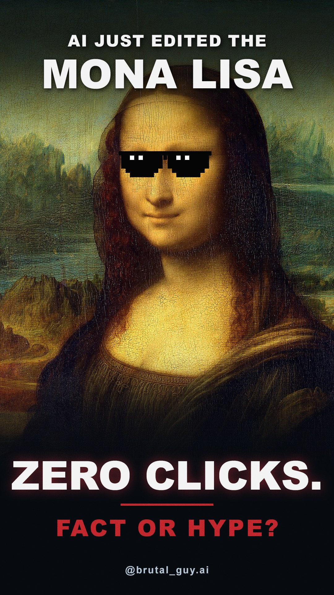

Brutal Test Kit: HKUDS/CLI-Anything on Adobe Photoshop
HALF-TRUE One generated CLI, one Windows laptop, Photoshop 2026 (v27.6). Tested 24 Nov 2026.
1. Building the CLI
Photoshop is not one of the 79 ready-made CLIs in the CLI-Hub registry, so I ran the repo's generator in Claude Code: /plugin install cli-anything@cli-anything, then /cli-anything:cli-anything "C:\Program Files\Adobe\Adobe Photoshop 2026". Plain /cli-anything gave "Unknown command" in my session.
It ran for 45m 43s and produced about 4,800 lines that drive the real Photoshop over Windows COM plus ExtendScript. It is not a mock. I had to close a Photoshop pop-up and a leftover test file before its own tests could run. Generated code: photoshop_cli_generated.tgz.
2. Easy job: it works
- run_ps_test.ps1 is a fixed Reel layout (canvas, shape, image, text and stroke, then PNG, PSD and JPG), run 3 times.
- 18 out of 18 commands succeeded.
- All three outputs are pixel-identical, and the pixels I sampled are exact.
- The PSD has a real, editable type layer.
- make_mona.ps1 made the Mona Lisa poster with 37 CLI commands.
- The result is 24 layers, including 5 editable text layers.
- One
psd editcommand made the "before" version. - Bug:
layer set -1 ...fails with "No such option '-1'", so I had to use real layer numbers (fix_mona.ps1).


The Mona Lisa is public domain (Wikimedia Commons).
3. Real Photoshop job: the AI goes around it
The agent was Claude Sonnet 5.5 on the Anthropic API, with only PowerShell, the generated CLI and its SKILL.md (ps_agent.py, no token cap). The task, in task_ps.txt, had three parts:
- Remove a red sticker I pasted onto mona_task.jpg.
- Cut out Mona Lisa.
- Make a 1080×1920 cover with an editable "FACT OR HYPE?" text layer.

| Run | CLI editing commands used | Raw Photoshop scripts (run-jsx) | Tokens |
|---|---|---|---|
| 1 (tainted: Photoshop was closed and the run restarted) | 0 | 27 | 617,587 |
| 2 | 0 | 11 | 417,103 |
| 3 | 0 | 17 | 692,216 |
- Why: the CLI has no Select Subject, Content-Aware Fill or mask commands. So the agent wrote raw ExtendScript through
backend run-jsxinstead. - Sticker: removed 3 out of 3 times. Run 2 left a visible smudge (comparison).
- Cutout: 3 out of 3 have transparency, but none is clean; all left chunks of landscape (cutouts and covers).
- Photoshop's own Select Subject also failed when I ran it by hand on this image, so I don't blame the CLI for the cutout quality.
- All 3 runs used OpenCV to find the outline.
- Pop-ups: Photoshop error dialogs froze the automation 7 times until I clicked OK. A runner bug of mine (a stdin prompt) caused one more stop, and I don't count it. See NOTES.md.


Full logs: agent_logs.tgz. Every command and output is in there.
Verdict
Half-true. The generator really builds a working Photoshop connection, and simple design jobs run cleanly and repeatably. On real Photoshop work (cutouts, fills, masks), the AI ignored the CLI 3 out of 3 times and scripted Photoshop directly. It also needed a human to click through pop-ups.
Also tested (same repo)
- LibreOffice CLI: when the AI was forced to use it, formulas broke with Err:510, and export without
-pwrote a text document. - Audacity CLI: the MP3/FLAC/OGG presets write WAV but report MP3 (core/export.py lines 203-209). Only 1 run per mode, so this one is preliminary.
brutal guy.ai · Hype Guy believes every README. Brutal Guy says "run it."